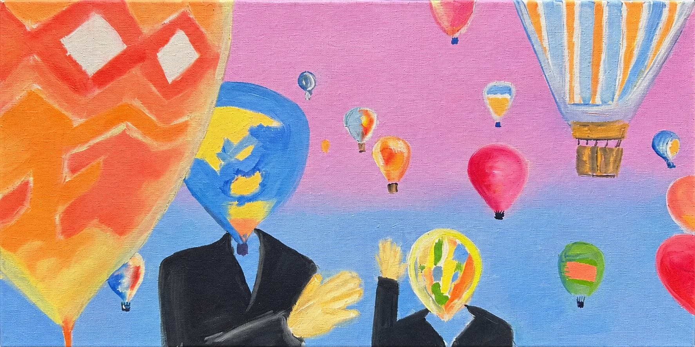
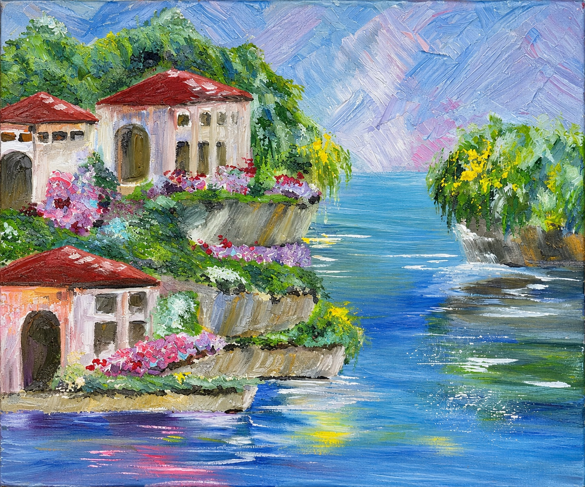
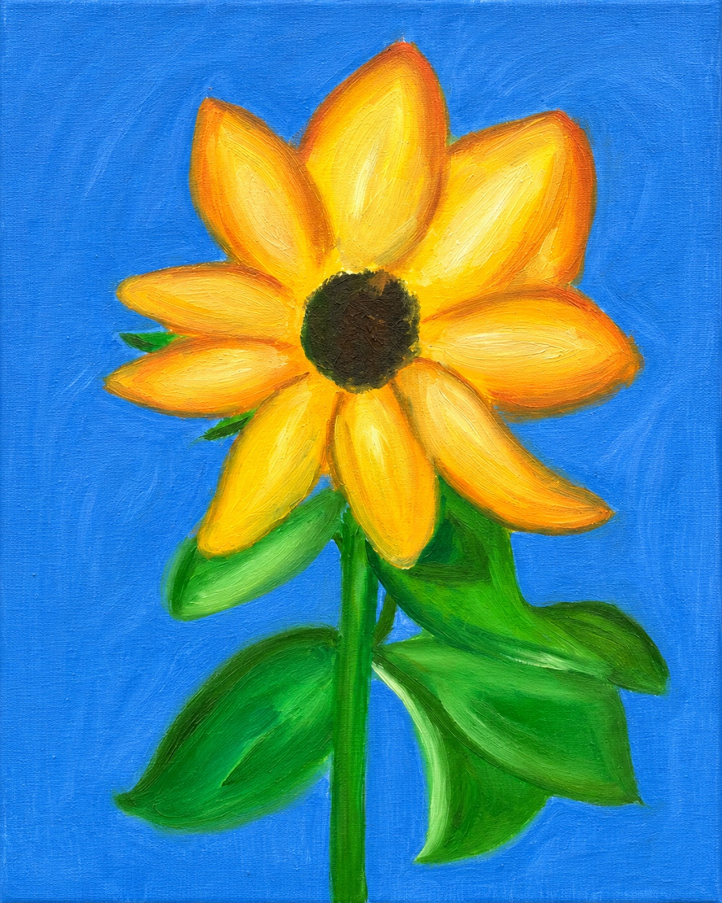
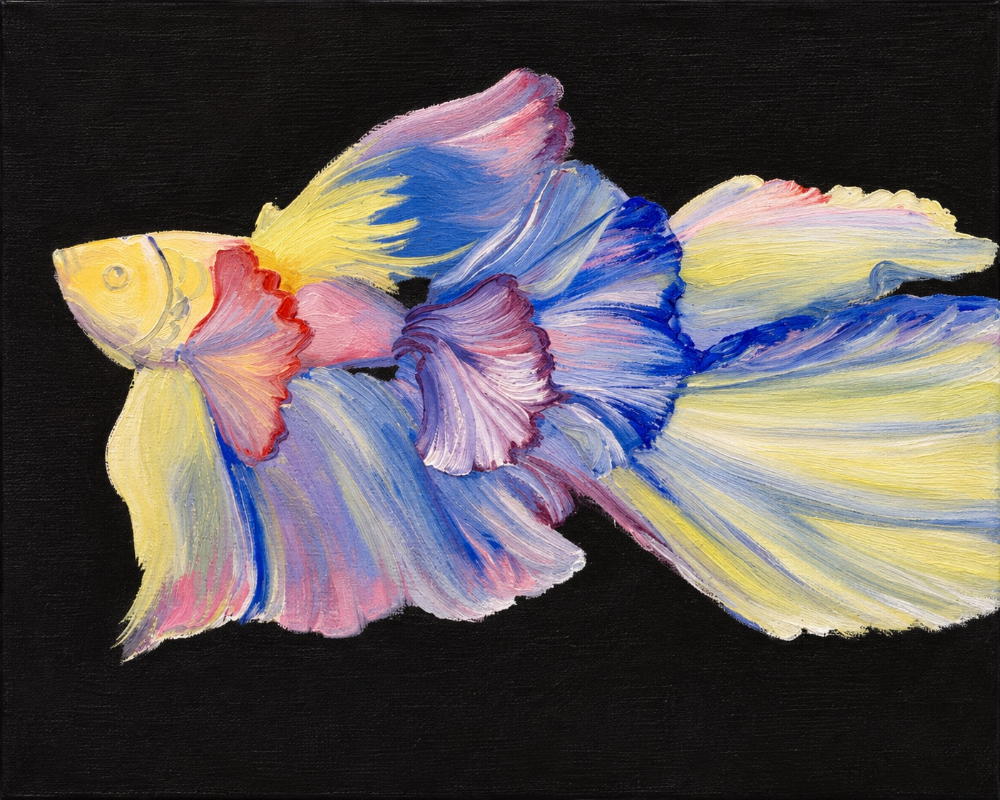
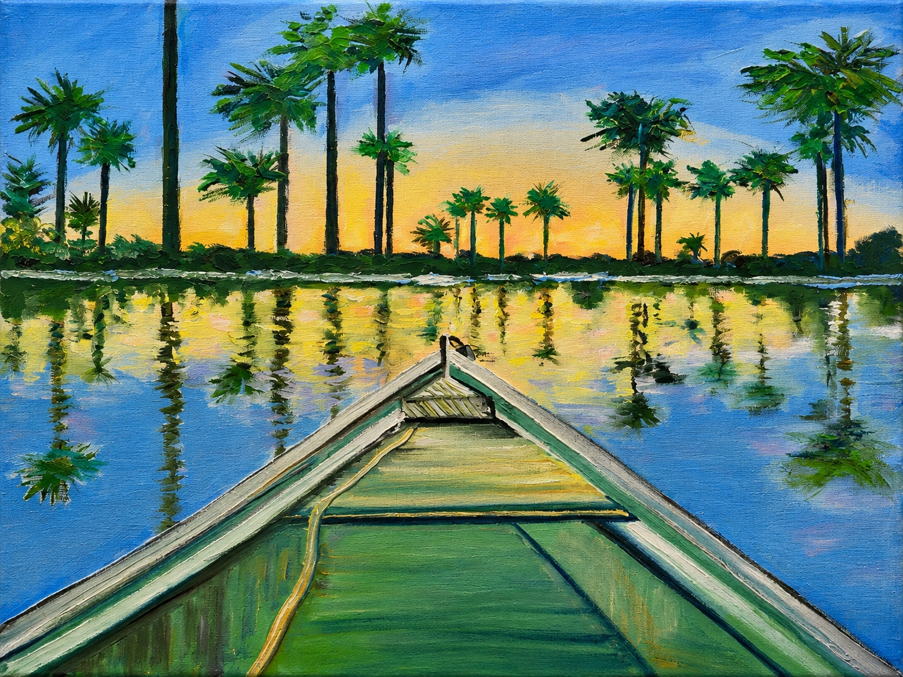

Reading
- The Emperor of Gladness Ocean Vuong
- Dreams C. G. Jung
- The Future Perfect Cay Kim
Hello, I’m
I grew up in Suzhou and now live in Boston, where I spend my days making software. Away from the screen, I’m usually painting in oil, baking something, reading, or making another coffee.
This is a small shelf for the things I keep coming back to.

Notes from lately
Updated July 2026.
I’ve been painting slowly in oil — gardens, water, flowers, and the occasional imagined sky.
From the easel
Five paintings from the studio, in color and up close.



